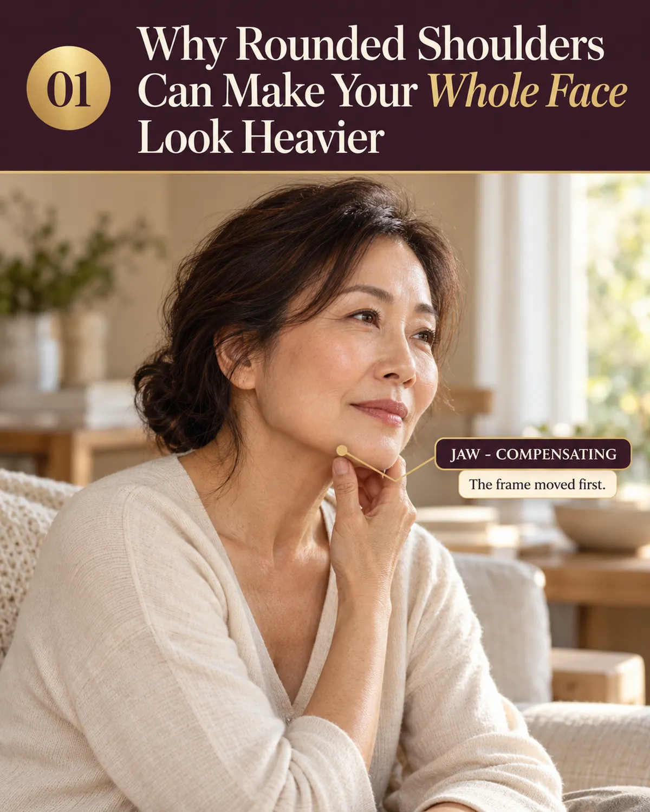
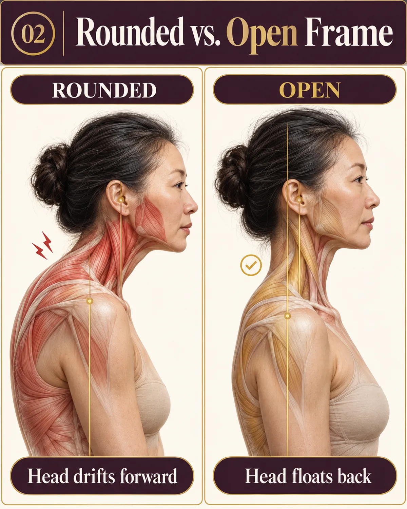
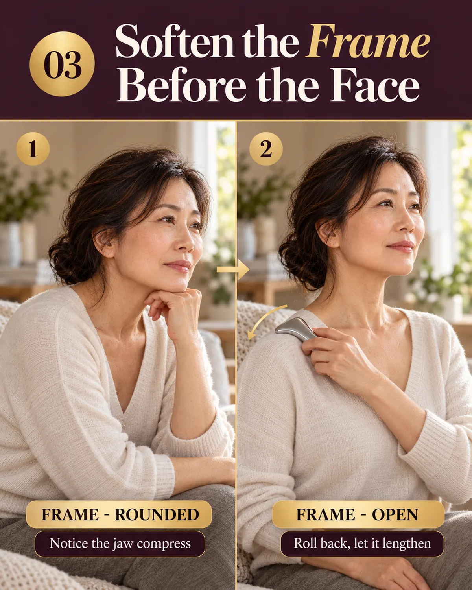

The Bojin Journal · Root cause & tension chains
Why Rounded Shoulders Can Make Your Whole Face Look Heavier

You own good skincare. You cleanse, you moisturize, maybe you keep a gua sha stone in a drawer. And still, by late afternoon, the lower half of your face looks heavier than it did at breakfast.
- Your face hangs on a frame made of your shoulders, chest, and neck, most of us care for the picture while ignoring the wall it hangs on.
- Rounded shoulders close the chest, the head drifts forward, the neck grips, and the jaw juts to keep your eyes level, that's what reads as heavy by evening.
- No cream reaches a bracing habit. The heaviness lives in held muscle, not on the skin's surface.
- Bojin works the frame first, shoulders then neck then jaw then face, never the other way round.

I want to tell you where I look first, because it surprises every new student. I look at her shoulders. After teaching this work in Taiwan for more than a decade, I can often guess how a face is carrying its day from the way the shoulders sit.
What rounded shoulders actually do to a face
The chain from shoulder to face has four links, and each one is ordinary. First, the shoulders round from desks, phones, and reading. Second, the chest closes and breathing goes shallow. Third, the head rides forward, and your neck muscles work harder to hold up its weight.
The jaw juts slightly to keep your eyes level, and the muscles along the jawline brace to help.
By evening, the lower face can read as heavier, thicker, and more set, though your features have not changed since morning. The mirror shows you the symptom. The shoulders are where the story started. The neck's own part of this chain gets a full walk-through in how neck tension shows in your face.

Sit the way you normally sit, and notice how the area under your chin feels. Now breathe out, roll your shoulders gently back and down, and let your head float back over your spine. Most people feel that whole area lengthen and lighten right away. Nobody touched your face. You moved the frame, and the face followed.
Why creams never reach this
A cream works on the surface of the skin. The heaviness we are talking about lives in held muscle and soft tissue, in a neck that has been bracing since breakfast and shoulders that forgot where back and down is. No topical product reaches a bracing habit.
Where bojin comes in
Bojin is a method, built on order, angle, and position: which area you work first, the direction you move, and where exactly you place the tool, all with a comfortable pressure. A gua sha stone is a tool. The method is what tells the tool where to go and in what sequence. Different jobs, not a contest.
Order matters most for this topic. If the heaviness in your lower face is fed by your shoulders and neck, starting on your cheeks means starting at the wrong end of the chain. In my classes we soften the frame first, so that by the time we reach the face there is somewhere for the tension to go.
The tool I teach with is a stainless steel bojin stick, with a broad edge for longer strokes and a rounded tip for small, precise spots. It is coming to the shop soon. Until then, the gua sha stone you already own is a perfectly good way to begin.
A gentle frame-first sequence
Plan on ten to fifteen minutes, two or three times a week. Use a few drops of facial or body oil wherever the tool touches skin. Slow is the whole game.

Begin with your posture, not the tool
Sit tall, roll your shoulders back and down, and take two slow breaths with your back teeth apart.
Shoulders, with your hand first
Knead the top of each shoulder with the opposite hand, slow squeezes from the base of the neck out toward the shoulder cap.
Sides and back of the neck only
With the broad edge, stroke gently down the sides of the neck, from behind the ear toward the shoulder. Stay completely away from the front and center of the throat.
Then the jawline
Unclench, and glide the broad edge from chin toward ear, unhurried.
Face last, as the reward
Sweep outward across the cheeks, then from the brow toward the temples, finishing with slow, light circles at each temple.

Who should wait, and who should ask a doctor first
The shoulder and neck area deserves more caution than the cheeks. If your skin has become thin or fragile, use only your hands here. If you have osteoporosis or low bone density, talk with your doctor before using any tool along the shoulders or neck. If you have had a recent neck or shoulder injury, wait and ask the professional caring for that injury first. If you take blood thinners or bruise very easily, start with hands only.
What this can honestly do
Bojin will not correct your posture or restructure your neck. What it can do is ease the gripping in the shoulders, neck, and jaw that a day of forward posture builds, gently and temporarily. My students often tell me the real change is that they start catching the slump at two in the afternoon instead of discovering it in the evening mirror.
Your mirror has been reporting on your shoulders for years. Now you know how to read the report.
Quick answers
Can rounded shoulders really make my face look heavier?
They can change how your face carries itself, yes. When the shoulders round and the head drifts forward, the neck grips and the area under the chin compresses, so the lower face tends to read heavier and more set by evening. Your features have not changed. The frame holding them has.
Will bojin fix my rounded shoulders?
No. Bojin can ease the tension that rounded shoulders create, and it can sharpen your awareness of the habit, but changing posture itself is work for movement, strengthening, and sometimes a physical therapist. The two approaches sit well side by side.
Should I work on my face or my shoulders first?
The frame first, always. If you soften the face while the shoulders and neck are still gripping, the ease has nowhere to settle, and the pattern below pulls things back quickly. Shoulders, then neck, then jaw, then face is the order I teach.
How often should I do the shoulder-to-face sequence?
Two or three times a week is plenty, with rest days in between. The effect of each session is gentle and temporary, and a steady weekly rhythm serves your skin far better than doing it every day.
Find Your Tightest Link (2-Min Quiz)
Your tightest link may be your shoulders, or a jaw or scalp working overtime to compensate. Take my two-minute quiz to find where your face is asking you to begin.
Take the Face Tension Quiz & Get My Custom Protocol →Free · 2 minutes · Your custom protocol, sent to your email
Yu-Ting Lan is a Taiwan-based international bojin instructor and the founder of Héhé Studio. She has taught her bojin method to more than a thousand students, from complete beginners to grandmothers, across Taiwan, Hong Kong, and Malaysia.